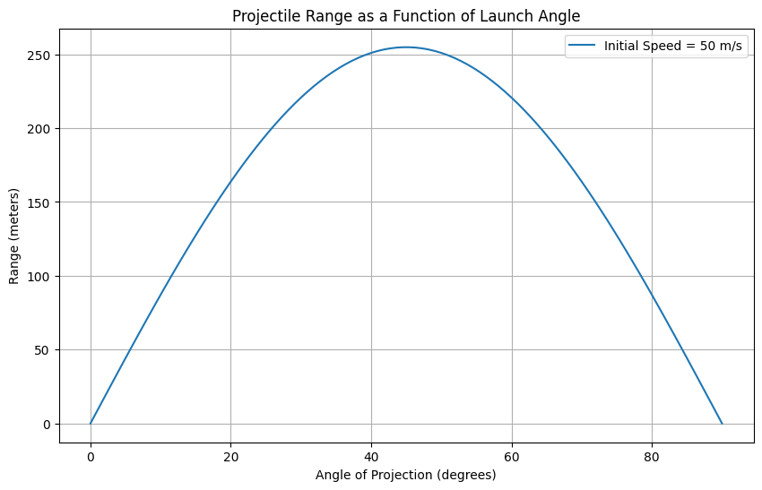

Əla! Gəlin riyazi hissəni daha geniş şəkildə, addım-addım və dərindən izah edək – həm fiziki mənaları, həm də düsturların törəmələrini daxil edəcəyik. Aşağıdakı bölmədə projectile (atma) hərəkətinin əsas düsturlarını tam şəkildə LaTeX formatında və aydın izahlarla yazıram.
📘 Theoretical Foundation: Equations of Motion
We analyze a projectile launched with an initial velocity \( v_0 \) at an angle \( \theta \) above the horizontal. We assume: - No air resistance, - The projectile is launched from and lands at the same vertical level, - The only acceleration is due to gravity \( g \).
🧭 Resolving Initial Velocity:
The initial velocity has two components:
-
Horizontal (x-direction): $$ v_{0x} = v_0 \cos(\theta) $$
-
Vertical (y-direction): $$ v_{0y} = v_0 \sin(\theta) $$
🔹 Horizontal Motion:
No acceleration in the horizontal direction (uniform motion):
-
Position over time: $$ x(t) = v_0 \cos(\theta) \cdot t $$
-
Velocity: $$ v_x(t) = v_0 \cos(\theta) = \text{constant} $$
🔸 Vertical Motion:
There is constant downward acceleration due to gravity:
-
Position over time: $$ y(t) = v_0 \sin(\theta) \cdot t - \frac{1}{2} g t^2 $$
-
Velocity over time: $$ v_y(t) = v_0 \sin(\theta) - g t $$
-
Acceleration: $$ a_y = -g $$
🕒 Time of Flight:
To find the total time the projectile is in the air, we solve \( y(T) = 0 \):
Factoring out \( T \neq 0 \):
📏 Horizontal Range:
Range is the total horizontal distance traveled during time \( T \):
Substitute \( T \):
Simplify:
⏫ Maximum Height:
The projectile reaches maximum height when vertical velocity is zero: [ v_y = 0 = v_0 \sin(\theta) - g t \Rightarrow t_{\text{max}} = \frac{v_0 \sin(\theta)}{g} ]
Now, plug into the vertical position equation: [ H_{\text{max}} = y(t_{\text{max}}) = v_0 \sin(\theta) \cdot \frac{v_0 \sin(\theta)}{g} - \frac{1}{2} g \left( \frac{v_0 \sin(\theta)}{g} \right)^2 ]
Simplify:
✅ Summary of Key Equations
| Quantity | Formula |
|---|---|
| Horizontal Position | \( x(t) = v_0 \cos(\theta) \cdot t \) |
| Vertical Position | \( y(t) = v_0 \sin(\theta) \cdot t - \frac{1}{2} g t^2 \) |
| Time of Flight | \( T = \frac{2 v_0 \sin(\theta)}{g} \) |
| Maximum Height | \( H = \frac{v_0^2 \sin^2(\theta)}{2g} \) |
| Range | \( R = \frac{v_0^2 \sin(2\theta)}{g} \) |
Would you like me to export all this into a Markdown (.md) or LaTeX (.tex) file for easy formatting in your project or paper?
 Here's a starting point for your project on projectile motion. The code:
Derives and plots the horizontal range as a function of the launch angle (from 0° to 90°).
Simulates the projectile trajectory for a specific angle (e.g., 45°).
Uses ideal conditions: no air resistance, flat ground, constant gravity.
Next steps could include:
Varying initial velocity and observing the effect.
Adding air resistance (e.g., using a drag coefficient).
Simulating on uneven terrain or with wind.